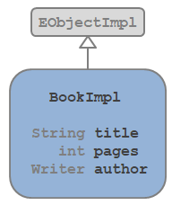
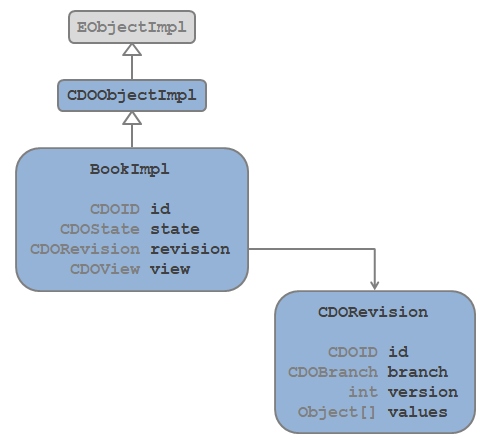
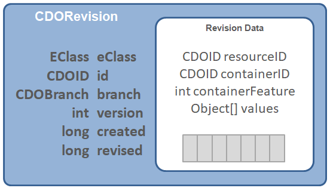

Anatomy of a Model Object


Anatomy of a Model Object |
|
EMF applications manipulate models as object graphs consisting of instances of EObjects. The EMF framework and
various EMF-based technologies provide a rich set of features for working with these object graphs, such as change
notification, persistence, and validation. EObjects are the core building blocks of EMF models, and they provide a common
interface for working with models.

CDO extends the capabilities of EMF by providing a distributed shared model framework that enables collaborative editing
of EMF models in a distributed environment. CDO achieves this by introducing the concept of a CDO repository, which
is a central server that manages the storage and retrieval of EMF models. Clients connect to the repository to
access and manipulate the shared model. In native model mode, a CDO-backed object implements CDOObject,
which extends EObject. With a legacy generated model, CDO adapts the generated EObject; use
CDOUtil when crossing between the EMF and CDO contracts instead of assuming the concrete Java object
implements both. This article explains the identity, revision data, owning view, and lifecycle state of an object.
A CDO object is still an EMF object, but its features are backed by revision data managed in a view. Its Java
identity is local to that view and lifetime; the repository identity is its CDOID. Its state reports the
object's role in the owning view, not a global repository status. Common properties are:
To support repository-backed access, CDO objects obtain feature data through a CDORevision. References in
revision data are represented by CDOIDs and resolved to Java objects as the view loads or navigates the graph.
A revision is therefore not the same object as the EObject: the revision is the data snapshot, while the
object is the view-bound EMF facade on which application code operates.

For native generated models, preparation generates CDO-aware implementations; ordinary generated models can still be used through legacy compatibility. See Preparing the Models. Regardless of model mode, objects belong to the view that loaded or created them. Once that view closes, the object is no longer a usable live repository object; copy out application values or retain the CDOID and reopen it in a new view instead.
Note that CDOObjects and CDOViews are client-side concepts. On the server side, CDO uses only CDORevisions to represent model objects. CDORevisions are also used as the unit of storage and retrieval in the CDO repository, as well as the unit of data transfer between clients and the server.
Object feature access follows the concurrency rules of the owning view. A single access is synchronized by the view, but a sequence that must observe one consistent state needs the view's critical section. Do not share an object between views or use it after closing its view. See Working with Views for synchronization.
A CDOID identifies a logical object independently of the view-bound Java instance and its revisions.
Newly attached objects can initially have a temporary ID; the repository assigns or confirms persistent identity
during commit. Persisted IDs are suitable for locating the same object in a later view. ID representation and
generation policy depend on repository configuration.
The identifier of a CDOObject can be accessed using the CDOObject.cdoID() method.
A CDORevision is the data for one object's state at a historical coordinate. It contains feature values
and metadata such as object ID, branch, version, and time; it does not contain the owning Java object's identity.
Committed revisions are historical records. A loaded object's current revision can be replaced as its view advances, while a transaction keeps a mutable working revision for local edits. A successful commit stores a new revision for each changed object; unchanged objects do not acquire a revision just because another object was committed.
A CDORevision references other model objects by their CDOID, not by direct object references. This indirection allows CDO to manage large object graphs efficiently, as it can load and unload objects from memory as needed. Also, it allows CDO to change the revision of an object without affecting other objects that reference it. This is essential for supporting versioning and branching; the branch and time point provide the historical context described in Branching and Versioning.

The revision of a CDOObject can be accessed using the CDOObject.cdoRevision() method.
Every CDO object belongs to the CDOView that owns its loaded instance. The view determines branch and time
context, resource set, synchronization boundary, and transaction state. A second view can load the same CDOID into
a distinct Java instance with different state. Closing the owning view releases this context; retaining the old
reference does not keep its repository access alive.
The view of a CDOObject can be accessed using the CDOObject.cdoView() method.
CDOState describes the object's lifecycle in its owning view. A newly created, unattached EMF object is transient; attaching it to a transaction makes it new. A persisted object is clean after loading. Its first effective local write makes it dirty, and undoing all local changes can return it to clean. Loading a proxy materializes its data. A remote invalidation can refresh a clean object or leave it as a proxy for lazy reload; if the transaction has local edits, an incoming change can instead produce a conflict state. Detaching and rollback have state-dependent effects, so state names should not be treated as a substitute for transaction semantics; see the transaction and notification chapters.